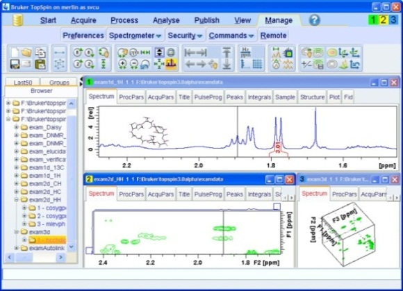

pyspecdata.load_files package¶
Submodules¶
pyspecdata.load_files.acert module¶
Open ACERT-format HDF5 files.
Provides post-processing routines for:
‘ELDOR’
‘ELDOR_3D’
‘FID’
‘echo_T2’
‘B1_se’
(which are typically
experiment names set in
(h5 root).experiment.description['class'])
- pyspecdata.load_files.acert.automagical_phasecycle(data, verbose=False)
Use the phase cycle list to determine the phase cycles, and then ift them to return coherence skips
- pyspecdata.load_files.acert.load_cw(filename, use_sweep=False)
load the cw file given by filename
- Parameters:
use_sweep (bool) – If true, return the axis labeled by sweep current rather than by field.
- pyspecdata.load_files.acert.load_pulse(filename, indirect_dimlabels=None, prefilter=None)
Load ACERT pulse data from the 95 GHz.
- Parameters:
indirect_dimlabels (str) – In case dimlabels is not set properly, I can manually pass the value of indirect_dimlabels.
prefilter (tuple) – If prefilter is set, FT the result, and select a specific slice. I should think of a more general way of doing this, where I pass an ndshape-based slice, instead.
- pyspecdata.load_files.acert.postproc_B1_se(data)
- pyspecdata.load_files.acert.postproc_b1_fid_file(data, fl=None, **kwargs)
- pyspecdata.load_files.acert.postproc_blank(data)
- pyspecdata.load_files.acert.postproc_cw(data, phase=True, use_sweep=False)
this opens the cw data, using search_freed_file and open_cw_file, and then autophases it
- pyspecdata.load_files.acert.postproc_echo_T2(data)
- pyspecdata.load_files.acert.postproc_eldor_3d(data)
- pyspecdata.load_files.acert.postproc_eldor_file(data, fl=None)
- pyspecdata.load_files.acert.postproc_eldor_old(data, **kwargs)
- pyspecdata.load_files.acert.postproc_generic(data)
pyspecdata.load_files.bruker_esr module¶
- pyspecdata.load_files.bruker_esr.resolve_missing_xepr_companion(companion, exp_type, zenodo)
Find or download an XEPR companion file.
- Parameters:
companion (str) – Path to the missing XEPR companion file.
exp_type (str) – Experiment type used to determine where remote data should be stored.
zenodo (str or None) – Deposition number on Zenodo. If provided, download the companion file from this deposition. Otherwise, search configured rclone remotes.
- Returns:
Path to the resolved companion file.
- Return type:
str
- pyspecdata.load_files.bruker_esr.winepr(filename, dimname='', exp_type=None)
For opening WinEPR files.
- Parameters:
filename (str) – The filename that ends with either
.paror.spc.
- pyspecdata.load_files.bruker_esr.winepr_load_acqu(filename)
Load the parameters for the winepr filename
- pyspecdata.load_files.bruker_esr.xepr(filename, exp_type=None, dimname='', zenodo=None)
For opening Xepr files.
- Parameters:
filename (str) – The filename that ends with
.DSC,.DTA, or.YGF.zenodo (str, optional) – Deposition number on Zenodo. If a required companion file is not present locally, download it from this deposition instead of searching rclone remotes.
- pyspecdata.load_files.bruker_esr.xepr_load_acqu(filename)
Load the Xepr acquisition parameter file, which should be a .dsc extension.
- Returns:
A dictionary of the relevant results.
Because of the format of the .dsc files, this is a dictionary of
dictionaries, where the top-level keys are the hash-block (*i.e.*
#DESC, *etc.*).
pyspecdata.load_files.bruker_nmr module¶
- pyspecdata.load_files.bruker_nmr.det_phcorr(v)
- pyspecdata.load_files.bruker_nmr.det_rg(a)
Determine the voltage correction from the Bruker NMR
rgvalue.
- pyspecdata.load_files.bruker_nmr.load_1D(file_reference, *subpath, **kwargs)
Load 1D bruker data into a file. Load acquisition parameters into property ‘acq’ and processing parameters from procno 1 only into ‘proc’
Note that is uses the ‘procs’ file, which appears to contain the correct data.
- pyspecdata.load_files.bruker_nmr.load_acqu(file_reference, *subpath, **kwargs)
Determine the jcamp file that stores the acquisition info and load it.
- Parameters:
file_reference – the file reference – see open_subpath
subpath – the subpath – see open_subpath
whichdim (optional string) – Default null string – for multi-dimensional data, there is a separate acqu file for each dimension.
return_s (bool) – Default True – whether to return the parameters of the saved data, or those manipulated since then.
- pyspecdata.load_files.bruker_nmr.load_jcamp(file_reference, *subpath)
return a dictionary with information for a jcamp file
- pyspecdata.load_files.bruker_nmr.load_title(file_reference, *subpath)
- pyspecdata.load_files.bruker_nmr.load_vdlist(file_reference, *subpath, **kwargs)
- pyspecdata.load_files.bruker_nmr.match_line(line, number_re, string_re, array_re)
- pyspecdata.load_files.bruker_nmr.series(file_reference, *subpath, **kwargs)
Open Bruker ser files.
Note that the expno is included as part of the subpath.
- Parameters:
filename – see
open_subpath()subpath – the path within the directory or zip file that’s one level up from the ser file storing the raw data (this is typically a numbered directory).
pyspecdata.load_files.ciqtek module¶
Load CIQTEK JSON .epr files.
- exception pyspecdata.load_files.ciqtek.Missing7Zip
Bases:
RuntimeError
- pyspecdata.load_files.ciqtek.is_ciqtek_file(filename)
Return true when filename contains a CIQTEK JSON EPR payload.
- pyspecdata.load_files.ciqtek.is_ciqtek_payload(payload)
Return true when payload has the CIQTEK JSON data layout.
- pyspecdata.load_files.ciqtek.load_ciqtek(filename)
Load a CIQTEK JSON
.eprfile as annddataobject.
pyspecdata.load_files.load_cary module¶
written based on igor code (under GPL license) taken from here.
- pyspecdata.load_files.load_cary.load_cary(filename)
pyspecdata.load_files.open_subpath module¶
- pyspecdata.load_files.open_subpath.open_subpath(file_reference, *subpath, **kwargs)
- Parameters:
file_reference (str or tuple) – If a string, then it’s the name of a directory. If it’s a tuple, then, it has three elements: the ZipFile object, the filename of the zip file (for reference), and the name of the file we’re interested in within the zip file.
test_only (bool) – just test if the path exists
pyspecdata.load_files.prospa module¶
routines specific to loading information from prospa files
- pyspecdata.load_files.prospa.decim_correct(data)
- pyspecdata.load_files.prospa.load_1D(filename)
- pyspecdata.load_files.prospa.load_2D(filename, dimname='')
- pyspecdata.load_files.prospa.load_acqu(file)
- pyspecdata.load_files.prospa.load_datafile(file, dims=1)
load a prospa datafile into a flat array as a 1D file use dims=2 if it’s a 2D file
- pyspecdata.load_files.prospa.t1_info(file)
pyspecdata.load_files.zenodo module¶
Transfer files between pyspecdata and Zenodo¶
This module provides zenodo_download() for downloading files from
published records or authenticated drafts, create_deposition() for
creating a draft, and zenodo_upload() for uploading a file to a draft.
- pyspecdata.load_files.zenodo.cmd(argv=None)
Upload files from
./data_files.csvto a Zenodo draft.The command line interface is
pyspecdata_zenodo <draft-id-or-title>.If the single argument matches
^[1-9][0-9]{5,9}$, it is interpreted as an existing Zenodo draft deposition id.Otherwise, it is used verbatim as the title for a new draft deposition.
Files are read from the
data_files.csvcreated in the current directory bypyspecdata.find_file()andpyspecdata.search_filename().
- pyspecdata.load_files.zenodo.create_deposition(title)
Create a new Zenodo deposition using
title.The deposition will pre-reserve a DOI, set the upload type to
datasetand mark today’s date as both the publication date and the availability date.
- pyspecdata.load_files.zenodo.zenodo_download(deposition, searchstring, exp_type=None)
Download the file from Zenodo
depositionthat matchessearchstringand place it in the directory associated withexp_typeusinggetDATADIR().The public records API is tried first. If Zenodo reports that the public record is not found, this function then tries the authenticated draft-deposition API using the configured Zenodo token.
- Parameters:
deposition (str) – Deposition identifier on Zenodo.
searchstring (str) – Regular expression used to search the file names inside the deposition.
exp_type (str) – Experiment type used to determine where the file should be stored via
getDATADIR().
- Returns:
Path to the downloaded file.
- Return type:
str
- pyspecdata.load_files.zenodo.zenodo_upload(local_path, title=None, deposition_id=None)
Upload
local_pathto Zenodo.A new deposition record will be created automatically for the first file and the remaining files will be uploaded to that same deposition. Keep token files local and never commit them to git.
To share a draft (unpublished record), click
Shareon the right side and add your collaborator, who must also have a Zenodo account. Then click thePreviewbutton, also on the right side. Either the panel on the right changes, indicating success, or you get a small red error message at the very top of the page, typically because author information or other required metadata is missing.To use this function, you must create a personal access token on the Zenodo website:
Module contents¶
This subpackage holds all the routines for reading raw data in proprietary
formats.
It’s intended to be accessed entirely through the function find_file(),
which uses datadir to search for the filename, then
automatically identifies the file type and calls the appropriate module to load the data into
an nddata.
Currently, Bruker file formats (both ESR and NMR), CIQTEK JSON EPR files, and (at least some earlier iteration) of Magritek file formats are supported.
Users/developers are very strongly encouraged to add support for new file types.
See find_file() for details.
- pyspecdata.load_files.bruker_dir(search_string, exp_type)
A generator that returns a 3-tuple of dirname, expno, and dataset for a directory
- pyspecdata.load_files.bruker_load_t1_axis(file)
- pyspecdata.load_files.bruker_load_title(file)
- pyspecdata.load_files.cw(file, **kwargs)
- pyspecdata.load_files.det_type(file, **kwargs)
- pyspecdata.load_files.find_file(searchstring, exp_type=None, postproc=None, print_result=True, verbose=False, prefilter=None, expno=None, dimname='', return_acq=False, add_sizes=[], add_dims=[], use_sweep=None, indirect_dimlabels=None, lookup={}, return_list=False, zenodo=None, **kwargs)
Find the file given by the regular expression searchstring inside the directory identified by exp_type, load the nddata object, and postprocess with the function postproc.
Used to find data in a way that works seamlessly across different computers (and operating systems). The basic scheme we assume is that:
Laboratory data is stored on the cloud (on something like Microsoft Teams or Google Drive, etc.)
The user wants to seamlessly access the data on their laptop.
The
.pyspecdataconfig file stores all the info about where the data lives + is stored locally. You have basically two options:Point the source directories for the different data folders (
exp_type) to a synced folder on your laptop.Recommended Point the source directories to a local directory on your computer, where local copies of files are stored, and then also set up one or more remotes using rclone (which is an open source cloud access tool).
pyspecdata can automatically search all your rclone remotes when you try to load a file. This is obviously slow.
After the auto-search, it adds a line to
.pyspecdataso that it knows how to find that directory in the future.It will tell you when it’s searching the remotes. If you know what you’re doing, we highly recommend pressing ctrl-C and then manually adding the appropriate line to RcloneRemotes. (Once you allow it to auto-search and add a line once, the format should be obvious.)
Supports the case where data is processed both on a laboratory computer and (e.g. after transferring via ssh or a syncing client) on a user’s laptop. While it will return a default directory without any arguments, it is typically used with the keyword argument exp_type, described below.
It looks at the top level of the directory first, and if that fails, starts to look recursively. Whenever it finds a file in the current directory, it will not return data from files in the directories underneath. (For a more thorough description, see
getDATADIR()).Note that all loaded files will be logged in the
data_files.csvfile in the directory that you run your python scripts from (so that you can make sure they are properly synced to the cloud, etc.).It calls
load_indiv_file(), which finds the specific routine from inside one of the modules (sub-packages) associated with a particular file-type.If it can’t find any files matching the criterion, it logs the missing file and throws an exception.
- Parameters:
searchstring (str) –
If you don’t know what a regular expression is, you probably want to wrap your filename with re.escape(, like this: re.escape(filename), and use that for your searchstring. (Where you have to import the re module.)
If you know what a regular expression is, pass one here, and it will find any filenames that match.
exp_type (str) – Gives the name of a directory, known to be pyspecdata, that contains the file of interest. For a directory to be known to pyspecdata, it must be registered with the (terminal/shell/command prompt) command pyspecdata_register_dir or in a directory contained inside (underneath) such a directory.
expno (int) – For Bruker NMR and Prospa files, where the files are stored in numbered subdirectories, give the number of the subdirectory that you want. Currently, this parameter is needed to load Bruker and Kea files. If it finds multiple files that match the regular expression, it will try to load this experiment number from all the directories.
postproc (function, str, or None) –
This function is fed the nddata data and the remaining keyword arguments (kwargs) as arguments. It’s assumed that each module for each different file type provides a dictionary called postproc_lookup (some are already available in pySpecData, but also, see the lookup argument, below).
Note that we call this “postprocessing” here because it follows the data organization, etc., performed by the rest of the file in other contexts, however, we might call this “preprocessing”
If postproc is a string, it looks up the string inside the postproc_lookup dictionary that’s appropriate for the file type.
If postproc is “none”, then explicitly do not apply any type of postprocessing.
If postproc is None, it checks to see if the any of the loading functions that were called set the postproc_type property – i.e. it checks the value of
data.get_prop('postproc_type')– if this is set, it uses this as a key to pull the corresponding value from postproc_lookup. For example, if this is a bruker file, it sets postproc to the name of the pulse sequence.For instance, when the acert module loads an ACERT HDF5 file, it sets postproc_type to the value of
(h5 root).experiment.description['class']. This, in turn, is used to choose the type of post-processing.- dimname:
passed to
load_indiv_file()- return_acq:
passed to
load_indiv_file()- add_sizes:
passed to
load_indiv_file()- add_dims:
passed to
load_indiv_file()- use_sweep:
passed to
load_indiv_file()- indirect_dimlabels:
passed to
load_indiv_file()
lookup (dictionary with str:function pairs) – types of postprocessing to add to the postproc_lookup dictionary
zenodo (str, optional) – Deposition number on Zenodo. When the requested file is not found locally, a file matching
searchstringwill be downloaded from this deposition instead of searching rclone remotes. The value is also passed to file format loaders that may need companion files, such as Bruker XEPR.DTAor.YGFfiles. Usepyspecdata_zenodo <draft-id-or-title>to upload thedata_files.csvgenerated while finding data.
- pyspecdata.load_files.format_listofexps(args)
Phased out: leaving documentation so we can interpret and update old code
This is an auxiliary function that’s used to decode the experiment list.
- Parameters:
args (list or tuple) –
can be in one of two formats
(dirname,[i,j,k,...N]):typically used, e.g. for Bruker NMR experiments.
i,j,...Nare integer numbers referring to individual experiments that are stored in subdirectories of dirname (a string).([exp_name1,...,exp_nameN]):just return this list of experiments given by the strings exp_name1…`exp_nameN`.
([exp_name1,...,exp_nameN],[]):identical to previous
([exp_name1,...,exp_nameN],[]):identical to previous
(exp_name1,...,exp_nameN):identical to previous
(exp_name)or(exp_name,[]):works for a single experiment
- pyspecdata.load_files.load_file(*args, **kwargs)
Phased out – this was used to concatenate files stored in different experiments
- Parameters:
args – The files are specified using the format given by
format_listofexps()
- pyspecdata.load_files.load_indiv_file(filename, dimname='', return_acq=False, add_sizes=[], add_dims=[], use_sweep=None, indirect_dimlabels=None, expno=None, exp_type=None, return_list=False, zenodo=None)
Open the file given by filename, use file signature magic and/or filename extension(s) to identify the file type, and call the appropriate function to open it.
- Parameters:
dimname (str) – When there is a single indirect dimension composed of several scans, call the indirect dimension dimname.
return_acq (DEPRECATED)
add_sizes (list) – the sizes associated with the dimensions in add_dims
add_dims (list) – Can only be used with dimname. Break the dimension dimname into several dimensions, with the names given by the list add_dims and sizes given by add_sizes. If the product of the sizes is not the same as the original dimension given by dimname, retain it as the “outermost” (leftmost) dimension.
pyspecdata.core.chunkoff()is used to do this, like so:data.chunkoff(dimname,add_dims,add_sizes)indirect_dimlabels (str or None) – passed through to acert.load_pulse (names an indirect dimension when dimlabels isn’t provided)
- Returns:
the nddata containing the data, or else, None, indicating that this is part of a pair of files that should be skipped
- Return type:
nddata or None
- pyspecdata.load_files.load_t1_axis(file)
- pyspecdata.load_files.prospa_t1_info(file)
- pyspecdata.load_files.register_proc_lookup(newdict)
this updates the dictionary at pyspecdata.load_files.postproc_lookup this is equivalent to passing newdict to the lookup keyword argument of find_file.
Remember that you only have to pass the keyword argument or call this function once per script, and the effects are persistent!
- pyspecdata.load_files.search_filename(searchstring, exp_type, print_result=True, unique=False, zenodo=None)
Use regular expression searchstring to find a file inside the directory indicated by exp_type (For information on how to set up the file searching mechanism, see
register_directory()).Used to find data in a way that works seamlessly across different computers (and operating systems). The basic scheme we assume is that:
Laboratory data is stored on the cloud (on something like Microsoft Teams or Google Drive, etc.)
The user wants to seamlessly access the data on their laptop.

Bruker TopSpin interface showing a typical NMR directory.¶
The
.pyspecdataconfig file stores all the info about where the data lives + is stored locally. You have basically two options:Point the source directories for the different data folders (
exp_type) to a synced folder on your laptop.Recommended Point the source directories to a local directory on your computer, where local copies of files are stored, and then also set up one or more remotes using rclone (which is an open source cloud access tool).
pyspecdata can automatically search all your rclone remotes when you try to load a file. This is obviously slow.
After the auto-search, it adds a line to
.pyspecdataso that it knows how to find that directory in the future.It will tell you when it’s searching the remotes. If you know what you’re doing, we highly recommend pressing ctrl-C and then manually adding the appropriate line to RcloneRemotes. (Once you allow it to auto-search and add a line once, the format should be obvious.)
Supports the case where data is processed both on a laboratory computer and (e.g. after transferring via ssh or a syncing client) on a user’s laptop. While it will return a default directory without any arguments, it is typically used with the keyword argument exp_type, described below.
- Parameters:
searchstring (str) –
If you don’t know what a regular expression is, you probably want to wrap your filename with re.escape(, like this: re.escape(filename), and use that for your searchstring. (Where you have to import the re module.)
If you know what a regular expression is, pass one here, and it will find any filenames that match.
exp_type (str) – Since the function assumes that you have different types of experiments sorted into different directories, this argument specifies the type of experiment see
getDATADIR()for more info.unique (boolean (default False)) – If true, then throw an error unless only one file is found.
zenodo (str, optional) – Deposition number on Zenodo. If provided and the file is not found locally, a file matching
searchstringwill be downloaded from this deposition. Rclone remotes are not searched when this option is used. When usingfind_file(), this value is also passed to file format loaders that may need to fetch companion files, such as Bruker XEPR.DTAor.YGFfiles. Use the commandpyspecdata_zenodo <draft-id-or-title>to upload thedata_files.csvgenerated byfind_file()andsearch_filename().